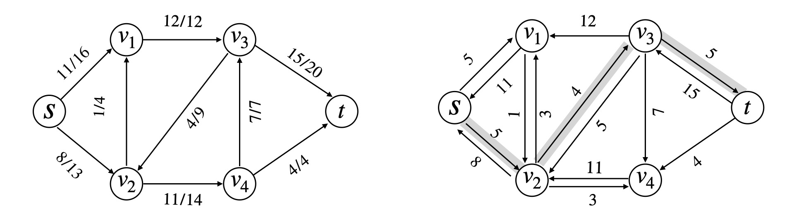
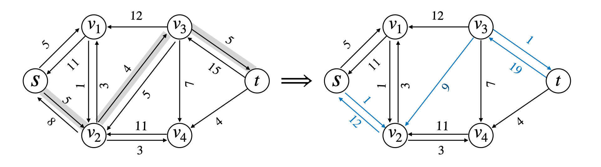

说明 G = ( V , E ) G=(V, E) G = ( V , E ) ∀ f \forall f ∀ f G f G_f G f
流网络 一个源点s s s t t t E E E ( u , v ) (u, v) ( u , v ) ( v , u ) (v, u) ( v , u ) c ( u , v ) c(u, v) c ( u , v ) f ( u , v ) f(u, v) f ( u , v )
容量限制∀ u , v ∈ V , 0 ⩽ f ( u , v ) ⩽ c ( u , v ) \forall u, v \in V, \quad 0 \leqslant f(u, v) \leqslant c(u, v) ∀ u , v ∈ V , 0 ⩽ f ( u , v ) ⩽ c ( u , v )
流量守恒∀ u ∈ V − { s , t } , ∑ v ∈ V f ( v , u ) = ∑ v ∈ V f ( u , v ) \forall u \in V - \{s, t\}, \quad \sum_{v \in V} f(v, u) = \sum_{v \in V} f(u, v) ∀ u ∈ V − { s , t } , v ∈ V ∑ f ( v , u ) = v ∈ V ∑ f ( u , v )
特别地，如果( u , v ) ∉ E , f ( u , v ) = 0 (u, v) \notin E, f(u, v) = 0 ( u , v ) ∈ / E , f ( u , v ) = 0 流∣ f ∣ = ∑ v ∈ V f ( s , v ) − ∑ v ∈ V f ( v , s ) |f| = \sum_{v \in V} f(s, v) - \sum_{v \in V} f(v, s) ∣ f ∣ = v ∈ V ∑ f ( s , v ) − v ∈ V ∑ f ( v , s )
Ford-Fulkerson 方法 初始化流为f = 0 f = 0 f = 0 while \textbf{while} while 在残量网络 G f 中存在一条增广路径 p \text{在残量网络 } G_f \ \text{中存在一条增广路径} \ p 在残量网络 G f 中存在一条增广路径 p 沿着 p 增加流 f \text{沿着} \ p \ \text{增加流} \ f 沿着 p 增加流 f return f \textbf{return} \ f return f 残量网络 
c f ( u , v ) = { c ( u , v ) − f ( u , v ) 如果 ( u , v ) ∈ E f ( v , u ) 如果 ( v , u ) ∈ E 0 其他 c_f(u, v) = \begin{cases} c(u, v) - f(u, v) && \text{如果} \ (u, v) \in E \\ f(v, u) && \text{如果} \ (v, u) \in E \\ 0 && \text{其他} \end{cases} c f ( u , v ) = ⎩ ⎪ ⎪ ⎨ ⎪ ⎪ ⎧ c ( u , v ) − f ( u , v ) f ( v , u ) 0 如果 ( u , v ) ∈ E 如果 ( v , u ) ∈ E 其他
f ′ f' f ′ f ′ ↑ f f' \uparrow f f ′ ↑ f f ′ f' f ′ f f f
( f ↑ f ′ ) ( u , v ) = { f ( u , v ) + f ′ ( u , v ) − f ′ ( v , u ) 若 ( u , v ) ∈ E 0 其他 (f \uparrow f')(u, v) = \begin{cases} f(u, v) + f'(u, v) - f'(v, u) && \text{若} (u, v) \in E \\ 0 && \text{其他} \end{cases} ( f ↑ f ′ ) ( u , v ) = { f ( u , v ) + f ′ ( u , v ) − f ′ ( v , u ) 0 若 ( u , v ) ∈ E 其他
引理1G ( V , E ) G(V, E) G ( V , E ) f f f G G G G f G_f G f f ′ f' f ′ G f G_f G f f ↑ f ′ f \uparrow f' f ↑ f ′ G G G ∣ f ↑ f ′ ∣ = ∣ f ∣ + ∣ f ′ ∣ |f \uparrow f'| = |f| + |f'| ∣ f ↑ f ′ ∣ = ∣ f ∣ + ∣ f ′ ∣
容量限制，f ′ ( v , u ) ⩽ c f ( v , u ) = f ( u , v ) f'(v, u) \leqslant c_f(v, u) = f(u, v) f ′ ( v , u ) ⩽ c f ( v , u ) = f ( u , v ) ( f ↑ f ′ ) ( u , v ) = f ( u , v ) + f ′ ( u , v ) − f ′ ( v , u ) ⇒ f ′ ( v , u ) ⩽ f ( u , v ) ⩾ f ( u , v ) + f ′ ( u , v ) − f ( u , v ) = f ′ ( u , v ) ⩾ 0 \begin{aligned} (f \uparrow f')(u, v) &= f(u, v) + f'(u, v) - f'(v, u) \xRightarrow{f'(v,u) \leqslant f(u,v)} \\ &\geqslant f(u, v) + f'(u, v) - f(u, v) = f'(u, v) \geqslant 0 \end{aligned} ( f ↑ f ′ ) ( u , v ) = f ( u , v ) + f ′ ( u , v ) − f ′ ( v , u ) f ′ ( v , u ) ⩽ f ( u , v ) ⩾ f ( u , v ) + f ′ ( u , v ) − f ( u , v ) = f ′ ( u , v ) ⩾ 0
( f ↑ f ′ ) ( u , v ) = f ( u , v ) + f ′ ( u , v ) − f ′ ( v , u ) ⇒ f ′ ( v , u ) ⩾ 0 ⩽ f ( u , v ) + f ′ ( u , v ) ⩽ f ( u , v ) + c f ( u , v ) = f ( u , v ) + c ( u , v ) − f ( u , v ) = c ( u , v ) \begin{aligned} (f \uparrow f')(u, v) &= f(u, v) + f'(u, v) - f'(v, u) \xRightarrow{f'(v,u) \geqslant 0} \\ &\leqslant f(u, v) + f'(u, v) \leqslant f(u, v) + c_f(u, v) \\ &= f(u, v) + c(u, v) - f(u, v) = c(u, v) \end{aligned} ( f ↑ f ′ ) ( u , v ) = f ( u , v ) + f ′ ( u , v ) − f ′ ( v , u ) f ′ ( v , u ) ⩾ 0 ⩽ f ( u , v ) + f ′ ( u , v ) ⩽ f ( u , v ) + c f ( u , v ) = f ( u , v ) + c ( u , v ) − f ( u , v ) = c ( u , v )
流量守恒，对于所有节点u ∈ V − { s , t } u \in V - \{s, t\} u ∈ V − { s , t } ∑ v ∈ V ( f ↑ f ′ ) ( u , v ) = ∑ v ∈ V ( f ( u , v ) + f ′ ( u , v ) − f ′ ( v , u ) ) = ∑ v ∈ V f ( u , v ) + ∑ v ∈ V f ′ ( u , v ) − ∑ v ∈ V f ′ ( v , u ) ⇒ 流量守恒 = ∑ v ∈ V f ( u , v ) + ∑ v ∈ V f ′ ( v , u ) − ∑ v ∈ V f ′ ( u , v ) = ∑ v ∈ V ( f ( v , u ) + f ′ ( v , u ) − f ′ ( u , v ) ) = ∑ v ∈ V ( f ↑ f ′ ) ( v , u ) \begin{aligned} \sum_{v \in V}(f \uparrow f')(u, v) &= \sum_{v \in V} \left( f(u, v) + f'(u, v) - f'(v, u) \right) \\ &= \sum_{v \in V} f(u, v) + \sum_{v \in V} f'(u, v) - \sum_{v \in V} f'(v, u) \xRightarrow{\text{流量守恒}} \\ &= \sum_{v \in V} f(u, v) + \sum_{v \in V} f'(v, u) - \sum_{v \in V} f'(u, v) \\ &= \sum_{v \in V} \left( f(v, u) + f'(v, u) - f'(u, v) \right) \\ &= \sum_{v \in V} (f \uparrow f')(v, u) \end{aligned} v ∈ V ∑ ( f ↑ f ′ ) ( u , v ) = v ∈ V ∑ ( f ( u , v ) + f ′ ( u , v ) − f ′ ( v , u ) ) = v ∈ V ∑ f ( u , v ) + v ∈ V ∑ f ′ ( u , v ) − v ∈ V ∑ f ′ ( v , u ) 流量守恒 = v ∈ V ∑ f ( u , v ) + v ∈ V ∑ f ′ ( v , u ) − v ∈ V ∑ f ′ ( u , v ) = v ∈ V ∑ ( f ( v , u ) + f ′ ( v , u ) − f ′ ( u , v ) ) = v ∈ V ∑ ( f ↑ f ′ ) ( v , u )
流量计算V 1 = { v : ( s , v ) ∈ E } V_1 = \{v : (s, v) \in E\} V 1 = { v : ( s , v ) ∈ E } s s s V 2 = { v : ( v , s ) ∈ E } V_2 = \{v : (v, s) \in E\} V 2 = { v : ( v , s ) ∈ E } s s s ∣ f ↑ f ′ ∣ = ∑ v ∈ V 1 ( f ↑ f ′ ) ( s , v ) − ∑ v ∈ V 2 ( f ↑ f ′ ) ( v , s ) |f \uparrow f'| = \sum_{v \in V_1} (f \uparrow f')(s, v) - \sum_{v \in V_2} (f \uparrow f')(v, s) ∣ f ↑ f ′ ∣ = v ∈ V 1 ∑ ( f ↑ f ′ ) ( s , v ) − v ∈ V 2 ∑ ( f ↑ f ′ ) ( v , s )
∣ f ↑ f ′ ∣ = ∑ v ∈ V 1 ( f ( s , v ) + f ′ ( s , v ) − f ′ ( v , s ) ) − ∑ v ∈ V 2 ( f ( v , s ) + f ′ ( v , s ) − f ′ ( s , v ) ) = ∑ v ∈ V 1 f ( s , v ) + ∑ v ∈ V 1 f ′ ( s , v ) − ∑ v ∈ V 1 f ′ ( v , s ) − ∑ v ∈ V 2 f ( v , s ) − ∑ v ∈ V 2 f ′ ( v , s ) + ∑ v ∈ V 2 f ′ ( s , v ) = ∑ v ∈ V 1 f ( s , v ) − ∑ v ∈ V 2 f ( v , s ) + ( ∑ v ∈ V 1 f ′ ( s , v ) + ∑ v ∈ V 2 f ′ ( s , v ) ) − ( ∑ v ∈ V 1 f ′ ( v , s ) + ∑ v ∈ V 2 f ′ ( v , s ) ) = ( ∑ v ∈ V 1 f ( s , v ) − ∑ v ∈ V 2 f ( v , s ) ) + ( ∑ v ∈ V 1 ∪ V 2 f ′ ( s , v ) − ∑ v ∈ V 1 ∪ V 2 f ′ ( v , s ) ) \begin{aligned} |f \uparrow f'| &= \sum_{v \in V_1} (f(s, v) + f'(s, v) - f'(v,s)) - \sum_{v\in V_2}(f(v,s) + f'(v,s) - f'(s, v)) \\ &= \sum_{v \in V_1}f(s, v) + \sum_{v \in V_1}f'(s, v) - \sum_{v \in V_1}f'(v, s) \\ &\quad - \sum_{v \in V_2}f(v, s) - \sum_{v \in V_2}f'(v,s) + \sum_{v \in V_2} f'(s, v) \\ &= \sum_{v \in V_1} f(s, v) - \sum_{v \in V_2}f(v,s) \\ &\quad + \left(\sum_{v \in V_1}f'(s, v) + \sum_{v \in V_2}f'(s, v) \right) - \left(\sum_{v \in V_1}f'(v, s) + \sum_{v \in V_2}f'(v,s) \right) \\ &= \left( \sum_{v \in V_1}f(s, v) - \sum_{v \in V_2}f(v,s) \right) + \left( \sum_{v \in V_1 \cup V_2} f'(s, v) - \sum_{v \in V_1 \cup V_2} f'(v,s) \right) \end{aligned} ∣ f ↑ f ′ ∣ = v ∈ V 1 ∑ ( f ( s , v ) + f ′ ( s , v ) − f ′ ( v , s ) ) − v ∈ V 2 ∑ ( f ( v , s ) + f ′ ( v , s ) − f ′ ( s , v ) ) = v ∈ V 1 ∑ f ( s , v ) + v ∈ V 1 ∑ f ′ ( s , v ) − v ∈ V 1 ∑ f ′ ( v , s ) − v ∈ V 2 ∑ f ( v , s ) − v ∈ V 2 ∑ f ′ ( v , s ) + v ∈ V 2 ∑ f ′ ( s , v ) = v ∈ V 1 ∑ f ( s , v ) − v ∈ V 2 ∑ f ( v , s ) + ( v ∈ V 1 ∑ f ′ ( s , v ) + v ∈ V 2 ∑ f ′ ( s , v ) ) − ( v ∈ V 1 ∑ f ′ ( v , s ) + v ∈ V 2 ∑ f ′ ( v , s ) ) = ( v ∈ V 1 ∑ f ( s , v ) − v ∈ V 2 ∑ f ( v , s ) ) + ( v ∈ V 1 ∪ V 2 ∑ f ′ ( s , v ) − v ∈ V 1 ∪ V 2 ∑ f ′ ( v , s ) )
∣ f ↑ f ′ ∣ = ∣ f ∣ + ∣ f ′ ∣ |f \uparrow f'| = |f| + |f'| ∣ f ↑ f ′ ∣ = ∣ f ∣ + ∣ f ′ ∣
增广路径 G f G_f G f 反向边流量增加 p p p G G G p p p 残存容量
c f ( p ) = min { c f ( u , v ) : ( u , v ) 属于路径 p } c_f(p) = \min \{c_f(u, v) : (u, v)\ \text{属于路径} \ p \} c f ( p ) = min { c f ( u , v ) : ( u , v ) 属于路径 p }
引理G = ( V , E ) G=(V, E) G = ( V , E ) f f f G G G p p p G f G_f G f f p ( u , v ) = { c f ( p ) 若 ( u , v ) 在 p 上 0 其他 f_p(u, v) = \begin{cases} c_f(p) && \text{若} \ (u, v) \ \text{在} \ p \text{上} \\ 0 && \text{其他} \end{cases} f p ( u , v ) = { c f ( p ) 0 若 ( u , v ) 在 p 上 其他
f p f_p f p G f G_f G f ∣ f p ∣ = c f ( p ) > 0 |f_p| = c_f(p) > 0 ∣ f p ∣ = c f ( p ) > 0 流网络的切割 一个流是最大流当且仅当残量网络中不包括任何增广路径
切割( S , T ) (S, T) ( S , T ) S S S T = V − S T = V-S T = V − S s ∈ S s \in S s ∈ S t ∈ T t \in T t ∈ T 净流量
f ( S , T ) = ∑ u ∈ S ∑ v ∈ T f ( u , v ) − ∑ u ∈ S ∑ v ∈ T f ( v , u ) f(S, T) = \sum_{u \in S} \sum_{v \in T} f(u, v) - \sum_{u \in S} \sum_{v \in T}f(v, u) f ( S , T ) = u ∈ S ∑ v ∈ T ∑ f ( u , v ) − u ∈ S ∑ v ∈ T ∑ f ( v , u )
割的容量
c ( S , T ) = ∑ u ∈ S ∑ v ∈ T c ( u , v ) c(S, T) = \sum_{u \in S} \sum_{v \in T} c(u, v) c ( S , T ) = u ∈ S ∑ v ∈ T ∑ c ( u , v )
引理 f f f G G G ( S , T ) (S, T) ( S , T ) ∀ ( S , T ) \forall \ (S, T) ∀ ( S , T ) f ( S , T ) = ∣ f ∣ f(S, T) = |f| f ( S , T ) = ∣ f ∣
根据流量守恒∀ u ∈ V − { s , t } \forall \ u \in V- \{s, t\} ∀ u ∈ V − { s , t } ∑ v ∈ V f ( u , v ) − ∑ v ∈ V f ( v , u ) = 0 \sum_{v \in V} f(u, v) - \sum_{v \in V} f(v, u) = 0 v ∈ V ∑ f ( u , v ) − v ∈ V ∑ f ( v , u ) = 0
对u ∈ S − { s } u \in S - \{s\} u ∈ S − { s } ∑ u ∈ S − { s } ( ∑ v ∈ V f ( u , v ) − ∑ v ∈ V f ( v , u ) ) = 0 \sum_{u \in S - \{s\}}\left( \sum_{v \in V}f(u, v) - \sum_{v \in V}f(v, u) \right) = 0 u ∈ S − { s } ∑ ( v ∈ V ∑ f ( u , v ) − v ∈ V ∑ f ( v , u ) ) = 0
由∣ f ∣ |f| ∣ f ∣ ∣ f ∣ = ∑ v ∈ V f ( s , v ) − ∑ v ∈ V f ( v , s ) + ∑ u ∈ S − { s } ( ∑ v ∈ V f ( u , v ) − ∑ v ∈ V f ( v , u ) ) |f| = \sum_{v \in V} f(s, v) - \sum_{v \in V} f(v, s) + \sum_{u \in S - \{s\}}\left( \sum_{v \in V}f(u, v) - \sum_{v \in V}f(v, u) \right) ∣ f ∣ = v ∈ V ∑ f ( s , v ) − v ∈ V ∑ f ( v , s ) + u ∈ S − { s } ∑ ( v ∈ V ∑ f ( u , v ) − v ∈ V ∑ f ( v , u ) )
展开并且重新组合∣ f ∣ = ∑ v ∈ V f ( s , v ) − ∑ v ∈ V f ( v , s ) + ∑ u ∈ S − { s } ∑ v ∈ V f ( u , v ) − ∑ u ∈ S − { s } ∑ v ∈ V f ( v , u ) = ∑ v ∈ V ( f ( s , v ) + ∑ u ∈ S − { s } f ( u , v ) ) − ∑ v ∈ V ( f ( v , s ) + ∑ u ∈ S − { s } f ( v , u ) ) = ∑ v ∈ V ∑ u ∈ S f ( u , v ) − ∑ v ∈ V ∑ u ∈ S f ( v , u ) \begin{aligned} |f| &= \sum_{v \in V}f(s, v) - \sum_{v \in V}f(v, s) + \sum_{u \in S - \{s\}}\sum_{v \in V}f(u, v) - \sum_{u \in S - \{s\}} \sum_{v \in V} f(v, u) \\ &= \sum_{v \in V} \left(f(s, v) + \sum_{u \in S - \{s\}}f(u, v) \right) - \sum_{v \in V} \left( f(v, s) + \sum_{u \in S - \{s\}} f(v, u) \right) \\ &= \sum_{v \in V}\sum_{u \in S} f(u, v) - \sum_{v \in V}\sum_{u \in S} f(v, u) \end{aligned} ∣ f ∣ = v ∈ V ∑ f ( s , v ) − v ∈ V ∑ f ( v , s ) + u ∈ S − { s } ∑ v ∈ V ∑ f ( u , v ) − u ∈ S − { s } ∑ v ∈ V ∑ f ( v , u ) = v ∈ V ∑ ⎝ ⎛ f ( s , v ) + u ∈ S − { s } ∑ f ( u , v ) ⎠ ⎞ − v ∈ V ∑ ⎝ ⎛ f ( v , s ) + u ∈ S − { s } ∑ f ( v , u ) ⎠ ⎞ = v ∈ V ∑ u ∈ S ∑ f ( u , v ) − v ∈ V ∑ u ∈ S ∑ f ( v , u )
将v ∈ V v \in V v ∈ V ( v ∈ S ) + ( v ∈ T ) (v \in S) + (v \in T) ( v ∈ S ) + ( v ∈ T ) ∣ f ∣ = ∑ v ∈ S ∑ u ∈ S f ( u , v ) + ∑ v ∈ T ∑ u ∈ S f ( u , v ) − ∑ v ∈ S ∑ u ∈ S f ( v , u ) − ∑ v ∈ T ∑ u ∈ S f ( v , u ) = ∑ v ∈ T ∑ u ∈ S f ( u , v ) − ∑ v ∈ T ∑ u ∈ S f ( v , u ) + ( ∑ v ∈ S ∑ u ∈ S f ( u , v ) − ∑ v ∈ S ∑ u ∈ S f ( v , u ) ) \begin{aligned} |f| &= \sum_{v \in S}\sum_{u \in S}f(u, v) + \sum_{v \in T} \sum_{u \in S}f(u, v) - \sum_{v \in S}\sum_{u \in S}f(v, u) - \sum_{v \in T} \sum_{u \in S}f(v, u) \\ &= \sum_{v \in T} \sum_{u \in S}f(u, v) - \sum_{v \in T} \sum_{u \in S}f(v, u) \\ &\quad + \left( \sum_{v \in S}\sum_{u \in S}f(u, v) - \sum_{v \in S}\sum_{u \in S}f(v, u) \right) \end{aligned} ∣ f ∣ = v ∈ S ∑ u ∈ S ∑ f ( u , v ) + v ∈ T ∑ u ∈ S ∑ f ( u , v ) − v ∈ S ∑ u ∈ S ∑ f ( v , u ) − v ∈ T ∑ u ∈ S ∑ f ( v , u ) = v ∈ T ∑ u ∈ S ∑ f ( u , v ) − v ∈ T ∑ u ∈ S ∑ f ( v , u ) + ( v ∈ S ∑ u ∈ S ∑ f ( u , v ) − v ∈ S ∑ u ∈ S ∑ f ( v , u ) )
括号中的求和项实际上是一样的，可以消去。由此∣ f ∣ = ∑ u ∈ S ∑ v ∈ T f ( u , v ) − ∑ u ∈ S ∑ v ∈ T f ( v , u ) = f ( S , T ) |f| = \sum_{u \in S} \sum_{v \in T} f(u, v) - \sum_{u \in S} \sum_{v \in T}f(v, u) = f(S, T) ∣ f ∣ = u ∈ S ∑ v ∈ T ∑ f ( u , v ) − u ∈ S ∑ v ∈ T ∑ f ( v , u ) = f ( S , T )
推论 G G G f f f G G G
∣ f ∣ = f ( S , T ) = ∑ u ∈ S ∑ v ∈ T f ( u , v ) − ∑ u ∈ S ∑ v ∈ T f ( v , u ) ⩽ ∑ u ∈ S ∑ v ∈ T f ( u , v ) ⩽ ∑ u ∈ S ∑ v ∈ T c ( u , v ) = c ( S , T ) \begin{aligned} |f| &= f(S, T) = \sum_{u \in S} \sum_{v \in T}f(u, v) - \sum_{u \in S} \sum_{v \in T}f(v, u) \\ &\leqslant \sum_{u\in S} \sum_{v \in T} f(u, v) \leqslant \sum_{u \in S}\sum_{v \in T}c(u, v) = c(S, T) \end{aligned} ∣ f ∣ = f ( S , T ) = u ∈ S ∑ v ∈ T ∑ f ( u , v ) − u ∈ S ∑ v ∈ T ∑ f ( v , u ) ⩽ u ∈ S ∑ v ∈ T ∑ f ( u , v ) ⩽ u ∈ S ∑ v ∈ T ∑ c ( u , v ) = c ( S , T )
流网络中最大流的值实际上等于一个最小切割的容量
最大流最小切割定理 设f f f G = ( V , E ) G=(V, E) G = ( V , E ) s s s t t t
f f f G G G 残量网络G f G_f G f ∣ f ∣ = c ( S , T ) |f|=c(S, T) ∣ f ∣ = c ( S , T ) ( S , T ) (S, T) ( S , T ) G G G 证明如下
( 1 ) ⇒ ( 2 ) (1) \Rightarrow (2) ( 1 ) ⇒ ( 2 ) p p p ∣ f ∣ ← ∣ f ∣ + ∣ f p ∣ |f| \leftarrow |f| + |f_p| ∣ f ∣ ← ∣ f ∣ + ∣ f p ∣ ∣ f ∣ |f| ∣ f ∣ ( 2 ) ⇒ ( 3 ) (2) \Rightarrow (3) ( 2 ) ⇒ ( 3 ) G f G_f G f G f G_f G f s → t s \to t s → t S = { v ∈ V : 在 G f 中存在一条从 s 到 v 的路径 } , T = V − S S = \{v \in V: \text{在} \ G_f \ \text{中存在一条从} \ s \ \text{到} \ v \ \text{的路径}\}, \quad T = V-S S = { v ∈ V : 在 G f 中存在一条从 s 到 v 的路径 } , T = V − S s ∈ S , t ∉ S s \in S, \quad t \notin S s ∈ S , t ∈ / S ( S , T ) (S, T) ( S , T ) G G G u ∈ S , t ∈ T u \in S, \quad t \in T u ∈ S , t ∈ T ( u , v ) ∈ E (u, v) \in E ( u , v ) ∈ E ( u , v ) ∉ E f (u, v) \notin E_f ( u , v ) ∈ / E f c f ( u , v ) = 0 c_f(u, v) = 0 c f ( u , v ) = 0 c f ( u , v ) = { c ( u , v ) − f ( u , v ) 如果 ( u , v ) ∈ E f ( v , u ) 如果 ( v , u ) ∈ E 0 其他 c_f(u, v) = \begin{cases} c(u, v) - f(u, v) && \text{如果} \ (u, v) \in E \\ f(v, u) && \text{如果} \ (v, u) \in E \\ 0 && \text{其他} \end{cases} c f ( u , v ) = ⎩ ⎪ ⎪ ⎨ ⎪ ⎪ ⎧ c ( u , v ) − f ( u , v ) f ( v , u ) 0 如果 ( u , v ) ∈ E 如果 ( v , u ) ∈ E 其他
也就是说，有f ( u , v ) = c ( u , v ) f(u, v) = c(u, v) f ( u , v ) = c ( u , v ) f ( v , u ) = 0 f(v, u) = 0 f ( v , u ) = 0 因此f ( S , T ) = ∑ u ∈ S ∑ v ∈ T f ( u , v ) − ∑ v ∈ T ∑ u ∈ S f ( v , u ) = ∑ u ∈ S ∑ v ∈ T c ( u , v ) − ∑ v ∈ T ∑ u ∈ S 0 = c ( S , T ) f(S, T) = \sum_{u \in S}\sum_{v \in T}f(u, v) - \sum_{v \in T}\sum_{u \in S}f(v, u) = \sum_{u\in S} \sum_{v \in T}c(u, v) - \sum_{v \in T} \sum_{u \in S} 0 = c(S, T) f ( S , T ) = u ∈ S ∑ v ∈ T ∑ f ( u , v ) − v ∈ T ∑ u ∈ S ∑ f ( v , u ) = u ∈ S ∑ v ∈ T ∑ c ( u , v ) − v ∈ T ∑ u ∈ S ∑ 0 = c ( S , T )
( 3 ) ⇒ ( 1 ) (3) \Rightarrow (1) ( 3 ) ⇒ ( 1 ) ∣ f ∣ ⩽ c ( S , T ) |f| \leqslant c(S, T) ∣ f ∣ ⩽ c ( S , T ) ∣ f ∣ = c ( S , T ) |f| = c(S, T) ∣ f ∣ = c ( S , T ) Ford-Fulkerson 算法 for ∀ edge ( u , v ) ∈ G . E \textbf{for} \ \forall \text{ edge}(u, v) \in G.E for ∀ edge ( u , v ) ∈ G . E ( u , v ) . f = 0 \quad (u, v).f = 0 ( u , v ) . f = 0 while 在残量网络 G f 存在一条 s → t 的增广路径 p \textbf{while} \ \text{在残量网络} \ G_f \ \text{存在一条} \ s\to t \ \text{的增广路径} \ p while 在残量网络 G f 存在一条 s → t 的增广路径 p c f ( p ) = min { c f ( u , v ) ( u , v ) ∈ p } \quad c_f(p) = \min \{c_f(u, v) \quad (u, v) \in p\} c f ( p ) = min { c f ( u , v ) ( u , v ) ∈ p } for ∀ edge ( u , v ) ∈ p \quad \textbf{for} \ \forall \ \text{edge}(u, v) \in p for ∀ edge ( u , v ) ∈ p if ( u , v ) ∈ E : ( u , v ) . f = ( u , v ) . f + c f ( p ) \quad \quad \textbf{if} \ (u, v) \in E: \quad (u, v).f = (u, v).f + c_f(p) if ( u , v ) ∈ E : ( u , v ) . f = ( u , v ) . f + c f ( p ) else : ( v , u ) . f = ( v , u ) . f − c f ( p ) \quad \quad \textbf{else}: \quad (v, u).f = (v, u).f - c_f(p) else : ( v , u ) . f = ( v , u ) . f − c f ( p )
算法分析
w h i l e \bold{while} w h i l e b f s \bold{bfs} b f s O ( V + E ) = O ( E ) O(V+E) = O(E) O ( V + E ) = O ( E ) w h i l e \bold{while} w h i l e O ( E ) O(E) O ( E ) 最坏情况每次c f ( p ) = 1 c_f(p) = 1 c f ( p ) = 1 1 1 1 while \textbf{while} while O ( ∣ f ∣ ) O(|f|) O ( ∣ f ∣ ) O ( E ∣ f ∣ ) O(E |f|) O ( E ∣ f ∣ ) Edmonds-Karp 算法 使用b f s \bold{bfs} b f s s → t s \to t s → t 其中每条边的权重为单位距离，δ f ( u , v ) \delta_f(u, v) δ f ( u , v ) G f G_f G f s → t s \to t s → t 时间复杂度O ( V E 2 ) O(VE^2) O ( V E 2 ) 引理 Edmonds-Karp \text{Edmonds-Karp} Edmonds-Karp G = ( V , E ) G=(V,E) G = ( V , E ) v ∈ V − { s , t } v \in V - \{s, t\} v ∈ V − { s , t } G f G_f G f δ f ( s , v ) \delta_f(s, v) δ f ( s , v )
假设存在一个流量递增操作f → f ′ f \to f' f → f ′ G f G_f G f ( u , v ) (u, v) ( u , v ) δ f ′ ( s , u ) ⩾ δ f ( s , u ) \delta_{f'} (s, u) \geqslant \delta_f (s, u) δ f ′ ( s , u ) ⩾ δ f ( s , u ) δ f ′ ( s , v ) < δ f ( s , v ) \delta_{f'} (s, v) < \delta_f (s, v) δ f ′ ( s , v ) < δ f ( s , v ) bfs \textbf{bfs} bfs E f ′ ( u , v ) E_{f'}(u, v) E f ′ ( u , v ) δ f ′ ( s , v ) = δ f ′ ( s , u ) + 1 \delta_{f'}(s, v) = \delta_{f'}(s, u) + 1 δ f ′ ( s , v ) = δ f ′ ( s , u ) + 1
对于( u , v ) ∈ E f ′ (u, v) \in E_{f'} ( u , v ) ∈ E f ′ ( u , v ) ∉ E f (u, v) \notin E_f ( u , v ) ∈ / E f δ f ( s , v ) ⩽ δ f ( s , u ) + 1 因为 ( u , v ) 是可行势 ⩽ δ f ′ ( s , u ) + 1 = δ f ′ ( s , v ) \begin{aligned} \delta_{f}(s, v) &\leqslant \delta_{f}(s, u) + 1 \quad \text{因为} (u, v) \text{是可行势} \\ &\leqslant \delta_{f'}(s, u) + 1 = \delta_{f'}(s, v) \end{aligned} δ f ( s , v ) ⩽ δ f ( s , u ) + 1 因为 ( u , v ) 是可行势 ⩽ δ f ′ ( s , u ) + 1 = δ f ′ ( s , v )
这与归纳假设矛盾 ( u , v ) ∈ E f , ( u , v ) ∉ E f ′ (u, v) \in E_f, \quad (u, v)\notin E_{f'} ( u , v ) ∈ E f , ( u , v ) ∈ / E f ′ v → u v \to u v → u E f ( v , u ) E_f(v, u) E f ( v , u ) Edmonds-Karp \text{Edmonds-Karp} Edmonds-Karp G f G_f G f s → u s \to u s → u ( v , u ) (v, u) ( v , u ) δ f ( s , v ) = δ f ( s , u ) − 1 ⩽ δ f ′ ( s , u ) − 1 = δ f ′ ( s , v ) − 2 \begin{aligned} \delta_{f}(s, v) &= \delta_{f}(s, u) - 1 \\ &\leqslant \delta_{f'}(s, u) - 1 = \delta_{f'}(s, v)-2 \end{aligned} δ f ( s , v ) = δ f ( s , u ) − 1 ⩽ δ f ′ ( s , u ) − 1 = δ f ′ ( s , v ) − 2
这个与δ f ′ ( s , v ) < δ f ( s , v ) \delta_{f'}(s, v) < \delta_{f}(s, v) δ f ′ ( s , v ) < δ f ( s , v ) 定理 Edmonds-Karp \text{Edmonds-Karp} Edmonds-Karp O ( V E ) O(VE) O ( V E ) G f G_f G f p p p c f ( p ) = c f ( u , v ) c_f(p) = c_f(u, v) c f ( p ) = c f ( u , v ) ( u , v ) (u, v) ( u , v ) 4 4 4 ∣ E ∣ |E| ∣ E ∣ ∣ V ∣ / 2 |V|/2 ∣ V ∣ / 2
沿着增广路径增加流，关键边从残量网络G f G_f G f ( u , v ) (u, v) ( u , v ) ( v , u ) (v, u) ( v , u ) 此时有δ f ( s , v ) = δ f ( s , u ) + 1 \delta_{f}(s, v) = \delta_{f}(s, u) + 1 δ f ( s , v ) = δ f ( s , u ) + 1 δ f ′ ( s , u ) = δ f ′ ( s , v ) + 1 \delta_{f'}(s, u) = \delta_{f'}(s, v) + 1 δ f ′ ( s , u ) = δ f ′ ( s , v ) + 1 δ f ( s , v ) ⩽ δ f ′ ( s , v ) \delta_{f}(s, v) \leqslant \delta_{f'}(s, v) δ f ( s , v ) ⩽ δ f ′ ( s , v ) δ f ′ ( s , u ) = δ f ′ ( s , v ) + 1 ⩾ δ f ( s , v ) + 1 = δ f ( s , u ) + 2 \delta_{f'}(s, u) = \delta_{f'}(s, v) + 1 \geqslant \delta_{f}(s, v) + 1 = \delta_{f} (s, u) + 2 δ f ′ ( s , u ) = δ f ′ ( s , v ) + 1 ⩾ δ f ( s , v ) + 1 = δ f ( s , u ) + 2 从( u , v ) (u, v) ( u , v ) ( s , u ) (s, u) ( s , u ) 2 2 2 s → u s \to u s → u s , t s, t s , t ∣ V ∣ − 2 |V|-2 ∣ V ∣ − 2 ( u , v ) (u, v) ( u , v ) O ( ∣ V ∣ / 2 ) O(|V|/2) O ( ∣ V ∣ / 2 ) O ( ∣ E ∣ ⋅ ∣ V ∣ / 2 ) O(|E| \cdot |V|/2) O ( ∣ E ∣ ⋅ ∣ V ∣ / 2 ) 算法实现 Acwing2171
1 2 3 4 5 6 7 8 9 10 11 12 13 14 15 16 17 18 19 20 21 22 23 24 25 26 27 28 29 30 31 32 33 34 35 36 37 38 39 40 41 42 43 44 45 46 47 48 49 50 51 52 53 54 55 56 57 const int maxn = 1000 + 10, maxm = 20000 + 10; const int inf = 0x3f3f3f3f; int head[maxn], ver[maxm], edges[maxm], ne[maxm], tot = 1, n, m, S, T; int d[maxn], pre[maxn], vis[maxn]; void add(int a, int b, int c) { ver[++tot] = b; edges[tot] = c; ne[tot] = head[a]; head[a] = tot; } bool bfs memset(vis, 0, sizeof vis); memset(d, 0, sizeof d); memset(pre, 0, sizeof pre); queue<int> q; vis[S] = 1, d[S] = inf, q.push(S); while (q.size()) { int x = q.front(); q.pop(); for (int i = head[x]; i; i = ne[i]) { int y = ver[i]; if (!vis[y] && edges[i] > 0) { vis[y] = true ; d[y] = min(d[x], edges[i]); pre[y] = i; if (y == T) return true ; q.push(y); } } } return false ; } void EK int res = 0; while (bfs()) { res += d[T]; for (int i = T; i != S; i = ver[pre[i] ^ 1]) { int id = pre[i]; edges[id] -= d[T], edges[id ^ 1] += d[T]; } } printf ("%d\n" , res); } int main //freopen("input.txt" , "r" , stdin); scanf("%d%d%d%d" , &n, &m, &S, &T); for (int i = 0; i < m; i++) { int a, b, c; scanf("%d%d%d" , &a, &b, &c); add(a, b, c); add(b, a, 0); } // Edmonds karp EK(); }
 微信
微信 支付宝
支付宝